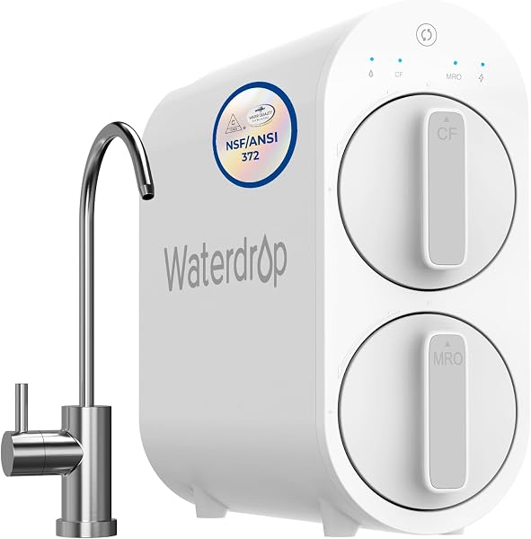
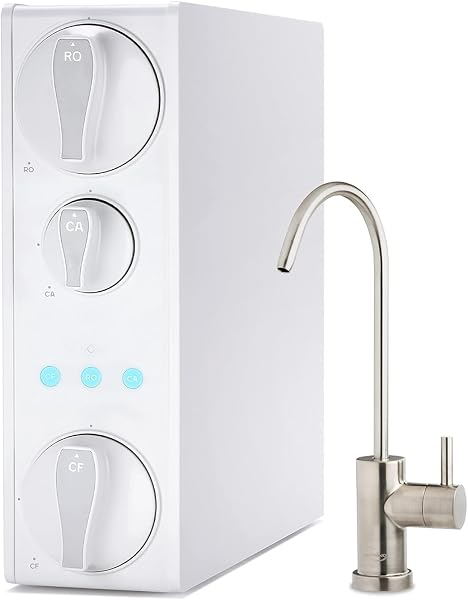
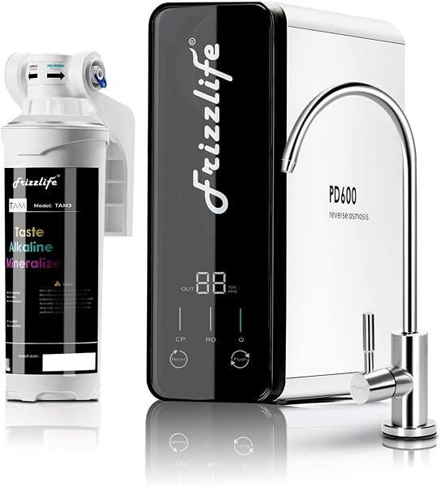
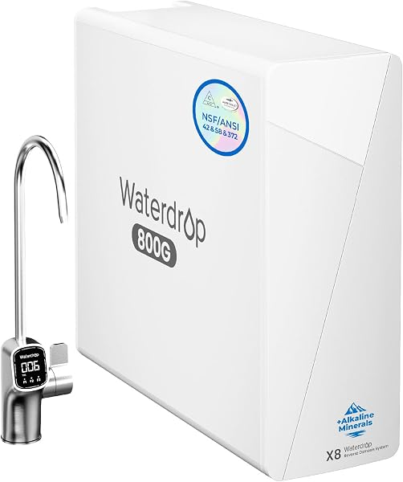
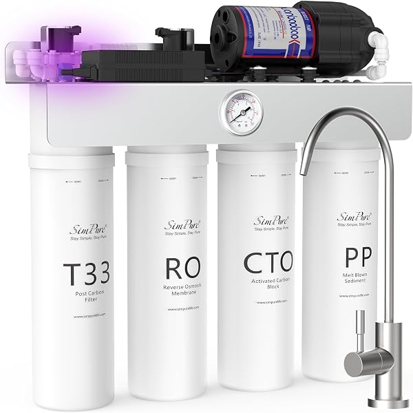

Best Tankless Reverse Osmosis Systems 2026 (Save Cabinet Space)
PureFlow Lab is reader-supported. We may earn a commission when you buy through links in this guide — at no extra cost to you. As an Amazon Associate, we earn from qualifying purchases. See our Disclosure for details.
Top Picks (At a Glance)
The best tankless reverse osmosis systems for 2026, by use case:

Waterdrop G3P600 — 8-Stage, 600 GPD, Full NSF Stack
The tankless flagship. 8-stage filtration, 600 GPD, the full NSF/ANSI 42/53/58/372 certification stack, 2:1 wastewater ratio, and a smart LED faucet. 3,900+ reviews at 4.5 stars. The default pick for most homeowners going tankless. ~$399–$539. Part of the Waterdrop lineup.
Check Price on Amazon →
Waterdrop G2 — 7-Stage, 400 GPD
The cheapest credible tankless RO — under $200, 7-stage, 2,000+ reviews at 4.5 stars. You give up some capacity and certifications vs the G3P600, but it’s the easiest, lowest-cost way into a tankless system. ~$199.
Check Price on Amazon →
iSpring RO500AK-BN — 500 GPD Tankless + Alkaline
The highest-rated tankless here (4.7 stars). 500 GPD, NSF/ANSI 58 certified, with alkaline remineralization built in — the tankless system to get if flat RO water bothers you. ~$523. Part of the iSpring lineup.
Check Price on Amazon →
Frizzlife — Alkaline Mineral pH+, NSF Certified
Alkaline remineralization at a mid-tier price, NSF certified, and very well-reviewed (2,400+ ratings at 4.6 stars). The pick if you want alkaline tankless water without paying iSpring RO500AK money. ~$357.
Check Price on Amazon →
Waterdrop X8-WAN — Alkaline Mineral, Smart
Waterdrop’s newer premium tankless — alkaline mineral remineralization, smart features, 4.7 stars. The pick if you want the latest Waterdrop tech with alkaline built in. ~$559.
Check Price on Amazon →
SimPure T1-400UV — 400 GPD Tankless + UV
A built-in UV sterilization stage in a budget tankless, NSF/ANSI 58 certified, 400 GPD, 790+ ratings. The pick for UV peace of mind (well water, questionable supply) at a low price. ~$218.
Check Price on Amazon →TL;DR: Tankless reverse osmosis ditches the bulky storage tank — water is filtered on demand, reclaiming cabinet space and offering better wastewater ratios than tank-based systems. For most homeowners, the Waterdrop G3P600 (~$399–$539) is the best tankless RO: 600 GPD, the full NSF certification stack, and 3,900+ reviews. On a budget, the Waterdrop G2 (~$199) is the cheapest credible tankless. Want alkaline water? The iSpring RO500AK (~$523, highest-rated) or the value Frizzlife (~$357) deliver it. For the latest premium tech, the Waterdrop X8-WAN (~$559). If you’d rather pay less and don’t mind a storage tank, see our best under-sink RO guide.
Why Go Tankless?
Traditional reverse osmosis systems store purified water in a 3-4 gallon pressurized tank under your sink. That tank works, but it has downsides: it eats 12-18 inches of cabinet space, the stored water can pick up a slightly stale taste, and the systems are less water-efficient (often wasting 3-4 gallons per gallon produced).
Tankless RO eliminates the tank. A built-in booster pump filters water on demand, the moment you open the faucet, at a high flow rate (400-1,000 GPD). The benefits:
- No storage tank — reclaim your under-sink cabinet space
- Fresh water every time — nothing sits in a tank
- Better wastewater ratios — typically 2:1 or better, vs 1:3 or 1:4 for tank systems
- High flow — 400-600 GPD means you never wait for a tank to refill
- Modern, compact design — most tankless units are slimmer and better-looking
The trade-offs: tankless systems cost more upfront, require a power outlet under the sink (the booster pump needs electricity), and can be slightly louder when running. For most people, the space savings and efficiency are worth it. If you want the lowest price and don’t mind the tank, a tank-based under-sink system still wins on cost.
Top Picks Detailed
Best Overall: Waterdrop G3P600
The Waterdrop G3P600 is the tankless system that defined the category and remains the best all-around pick. 8-stage filtration, 600 GPD output (effectively unlimited for a household), the full NSF/ANSI 42/53/58/372 certification stack (the broadest in the category), a 2:1 wastewater ratio, and a smart LED faucet showing filter status. 3,900+ reviews at 4.5 stars.
What sets the G3P600 apart is the combination of high capacity, the fullest certifications, and a proven track record. It’s frequently on sale (often ~$399, list $539), which makes it competitive with cheaper tankless units while offering more. For the full Waterdrop range — including the budget D6, the smart G3P800, and the flagship X16 — see our Waterdrop review.
Pros: Full NSF 42/53/58/372 stack, 600 GPD, 2:1 wastewater ratio, smart faucet, 3,900+ reviews, frequently discounted. Cons: Requires under-sink power, pricier than budget tankless, proprietary filters cost a bit more.
Price at last check: $399.00 (list $539). Check Price on Amazon →
Best Budget: Waterdrop G2
The Waterdrop G2 is the cheapest credible tankless RO system — under $200, 7-stage filtration, 400 GPD, and 2,000+ reviews at 4.5 stars. It’s the easiest, lowest-cost way to get the tankless experience: no storage tank, compact design, on-demand water.
You give up some capacity (400 vs 600 GPD) and the broader certification stack of the G3P600, but for a normal household the G2 delivers clean tankless RO water at a price that undercuts most tank-based systems. It’s the pick for budget-conscious buyers who specifically want tankless.
Pros: Cheapest credible tankless (under $200), 7-stage, compact, 2,000+ reviews, proven Waterdrop brand. Cons: Lower 400 GPD capacity, fewer certifications than the G3P600, no alkaline, requires power.
Price at last check: $199.00. Check Price on Amazon →
Best Alkaline: iSpring RO500AK-BN
The iSpring RO500AK-BN is the highest-rated tankless system in this guide (4.7 stars) and the pick if you want alkaline-remineralized water in a tankless form. 500 GPD, NSF/ANSI 58 certified, with the alkaline stage that adds minerals back for a more natural taste — something the standard Waterdrop tankless units don’t include.
This is iSpring’s premium tankless entry, combining their reputation and support with a modern tankless design and alkaline taste. For the rest of iSpring’s range — including the best-selling tank-based RCC7AK — see our iSpring review.
Pros: Highest-rated tankless (4.7 stars), alkaline remineralization included, 500 GPD, NSF 58 certified, iSpring support. Cons: Pricier than the Waterdrop G3P600’s sale price, requires power, brushed-nickel finish is the main variant.
Price at last check: $522.87. Check Price on Amazon →
Best Value Alkaline: Frizzlife
The Frizzlife tankless RO hits a sweet spot: alkaline mineral remineralization, NSF certification, and 2,400+ reviews at 4.6 stars — all at a mid-tier price well below the iSpring RO500AK. If you want alkaline tankless water and the iSpring’s price is a stretch, the Frizzlife is the value answer.
Frizzlife is a smaller brand than Waterdrop or iSpring, but the review volume and rating show it holds up. The pH+ remineralization is the headline feature for taste-focused buyers.
Pros: Alkaline mineral pH+ remineralization, NSF certified, 2,400+ reviews at 4.6 stars, good mid-tier value. Cons: Smaller brand than Waterdrop/iSpring, requires power, less name recognition for support.
Price at last check: $357.18. Check Price on Amazon →
Best Premium: Waterdrop X8-WAN
The Waterdrop X8-WAN is Waterdrop’s newer premium tankless, adding alkaline mineral remineralization and smart features to the proven tankless platform. 4.7 stars across 240+ reviews. The pick if you want the latest Waterdrop technology with alkaline built in — combining the brand’s tankless engineering with the remineralized taste that the G3P600 lacks.
At ~$559 it’s the most expensive pick here, aimed at buyers who want the newest, most feature-complete Waterdrop tankless. For how it compares to the rest of the Waterdrop lineup, see our Waterdrop review.
Pros: Newest Waterdrop tankless, alkaline mineral remineralization, smart features, 4.7-star rating. Cons: Most expensive pick here, newer model with a smaller review base, requires power.
Price at last check: $559.00. Check Price on Amazon →
How to Choose a Tankless RO System
Four things to weigh:
Flow rate (GPD). Tankless systems range from 400 to 1,000+ GPD. Higher GPD means faster flow at the faucet. 400 GPD (Waterdrop G2) is fine for most homes; 600 GPD (G3P600) is comfortably more than any household needs.
Certifications. The Waterdrop G3P600’s full NSF/ANSI 42/53/58/372 stack is the broadest. Most tankless units carry at least NSF 58 (RO performance) and 372 (lead-free). For a specific contaminant concern, check the certification covers it — and test your water first.
Alkaline / remineralization. Standard tankless units (Waterdrop G3P600, G2) produce flat-tasting RO water. If taste matters, choose an alkaline model: iSpring RO500AK, Frizzlife, or Waterdrop X8-WAN. See our guide on whether RO water is good for you for the remineralization question.
Power requirement. Every tankless system needs a power outlet under the sink for its booster pump. Confirm you have one (or can add one) before buying — this is the most common install surprise.
Comparison Table
| System | GPD | Stages | Alkaline | NSF | Price |
|---|---|---|---|---|---|
| Waterdrop G3P600 | 600 | 8 | No | 42/53/58/372 | $399–$539 |
| Waterdrop G2 | 400 | 7 | No | 58/372 | $199 |
| iSpring RO500AK | 500 | — | Yes | 58 | $523 |
| Frizzlife | — | — | Yes | Certified | $357 |
| Waterdrop X8-WAN | — | — | Yes | Certified | $559 |
| SimPure T1-400UV | 400 | RO+UV | No | 58 | $218 |
FAQ
What is a tankless reverse osmosis system?
A tankless RO system filters water on demand using a built-in booster pump, instead of storing purified water in a pressurized tank. When you open the faucet, water is filtered through the RO membrane in real time at a high flow rate (400-1,000 GPD). This eliminates the bulky storage tank, reclaims cabinet space, and improves water efficiency compared to tank-based systems.
Are tankless RO systems better than tank systems?
For most people, yes — tankless systems save space, deliver fresher water, and waste less. But they cost more upfront and require a power outlet under the sink. If you want the lowest price and don’t mind the tank, a tank-based under-sink system is still a great value. The APEC, iSpring, and Express Water tank systems are all cheaper than tankless.
Do tankless RO systems need electricity?
Yes — every tankless RO system requires a power outlet under the sink to run its booster pump. This is the most common install surprise. Before buying, confirm you have an accessible outlet in the cabinet (or can add one). Tank-based systems, by contrast, run on water pressure alone and need no power.
Which tankless RO system is best for the money?
The Waterdrop G2 (~$199) is the best budget tankless, and the Waterdrop G3P600 (frequently ~$399 on sale) is the best overall value given its full certification stack and 600 GPD capacity. For alkaline on a budget, the Frizzlife (~$357) is the value pick.
Do tankless RO systems have alkaline / remineralization?
Some do, some don’t. Standard Waterdrop tankless units (G3P600, G2) don’t include remineralization, so the water tastes flat to some people. If you want alkaline tankless water, choose the iSpring RO500AK, Frizzlife, or Waterdrop X8-WAN — all include remineralization.
Bottom Line
For most homeowners, the Waterdrop G3P600 (~$399–$539) is the best tankless reverse osmosis system — 600 GPD, the fullest NSF certifications, and a proven track record. Go budget with the Waterdrop G2 (~$199), get alkaline with the iSpring RO500AK (~$523) or value Frizzlife (~$357), or go premium with the Waterdrop X8-WAN (~$559). If you’d rather save money with a tank, see our best under-sink RO guide.
Keep Reading
- Reverse Osmosis Wastewater: Is It Really 4:1? — and how to cut it
- Best Reverse Osmosis Systems for Home — the full field, tank and tankless
- Waterdrop Reverse Osmosis Review — deep dive on the tankless category leader
- iSpring Reverse Osmosis Review — the RO500 tankless and the full iSpring lineup
- APEC vs iSpring vs Waterdrop Showdown — tank vs tankless, head-to-head
- Best Countertop Reverse Osmosis Systems — no-plumbing alternative
- How to Install a Reverse Osmosis System — including the tankless power requirement
- Whole House RO vs Under-Sink RO — which form factor fits you